越国正道七派
正道盟越国修仙界正统，共同执掌血色禁地试炼；掩月宗为首、灵兽山次之。
- 掩月宗
- 灵兽山
- 黄枫谷
- 清虚门
- 化刀坞
- 天阙堡
- 巨剑门
代表人物南宫婉、红拂、钟卫娘（掩月宗）· 李化元、韩立（黄枫谷）
动画人界篇观剧手册 · 更新至「重返天南 · 慕兰之战」，韩立 元婴初期
落云宗第三位太上长老 · 天南十大强者之一 · 217 岁凝结元婴
二愣子出身，以凡人之姿稳健登阶：掌天瓶催熟灵药、青元剑诀驭剑成阵。虚天殿「让柱」全身而退，携虚天鼎、风雷翅纵横星海；结婴后重返天南，与南宫婉终成道侣，现执掌落云宗。
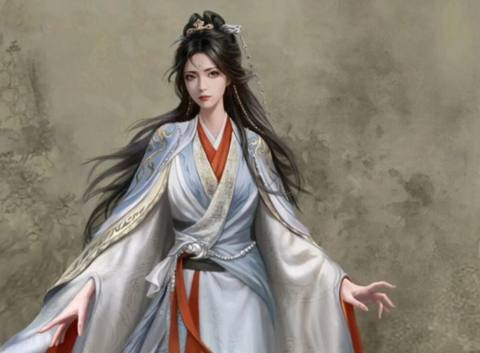
掩月宗 → 落云宗
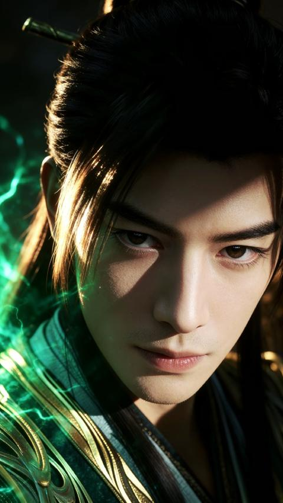
玄阴岛主
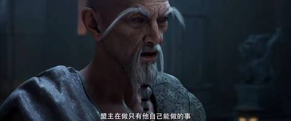
九国盟 · 化意门太上长老
天南三大修士之一
天道盟盟主 · 鸾鸣宗
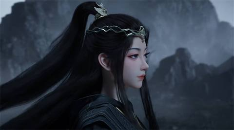
鸾鸣宗宗主
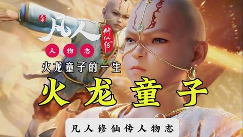
天南散修
掩月宗 → 落云宗
落云宗太上长老
落云宗太上长老
黄枫谷太上老祖
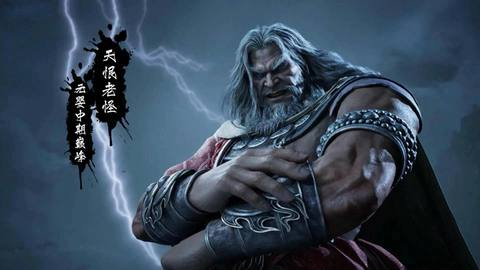
魔道散人
合欢宗宗主
合欢宗
鬼灵门
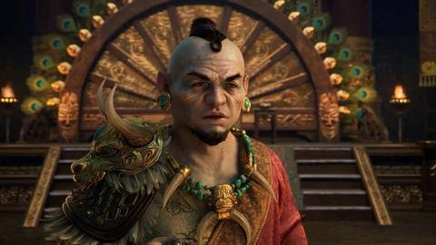
慕兰大神师
慕兰上师
慕兰上师
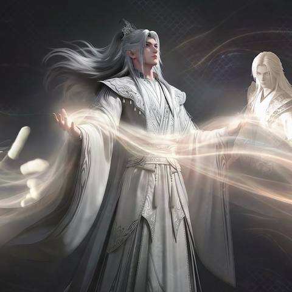
星宫 · 天星双圣
星宫 · 天星双圣
极阴岛主
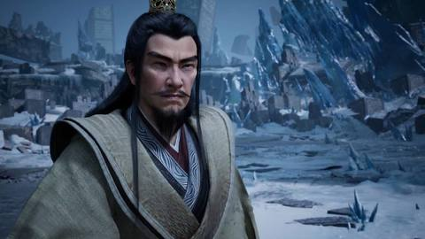
万法门门主
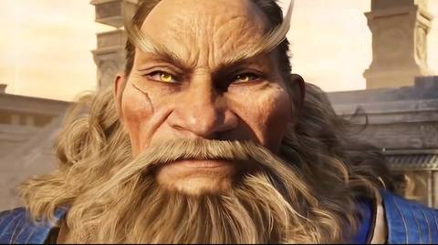
乱星海散修
乱星海
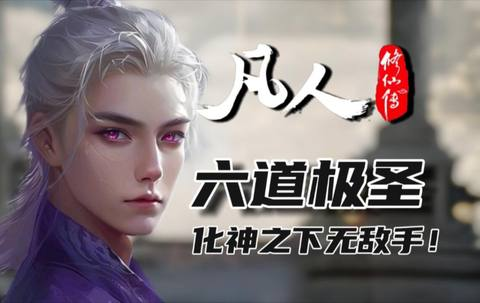
乱星海魔道第一人
注：次要人物暂无公开官方剧照，以阵营名帖示意；境界与事迹以动画已播内容为主、原著对照为辅。
韩立的出身之地：四大势力分治，越国大战与慕兰边患贯穿始终
越国修仙界正统，共同执掌血色禁地试炼；掩月宗为首、灵兽山次之。
代表人物南宫婉、红拂、钟卫娘（掩月宗）· 李化元、韩立（黄枫谷）
盘踞天罗国的魔道宗门联盟，几度大举入侵越国；燕家堡一脉即出自鬼灵门。
代表人物合欢老魔、云露老魔（合欢宗）· 王天古、王蝉父子（鬼灵门）
十数国修士组成的老牌联盟，城池商路遍布天南；化意门为其擎天之柱。
代表人物魏无涯（化意门太上长老，公认天南第一元婴）
十余宗门联合体，鸾鸣宗执牛耳；云梦三宗为其骨干，韩立结婴后执掌落云宗。
代表人物龙晗、凤冰（鸾鸣宗）· 韩立、程天坤、吕洛、南宫婉（落云宗）
天南以西的草原术法部族，以神师、上师为尊；两度大举入侵，是当前「慕兰之战」的对手。
代表人物仲神师 · 乐上师 · 穆上师 · 慕兰圣女慕沛灵
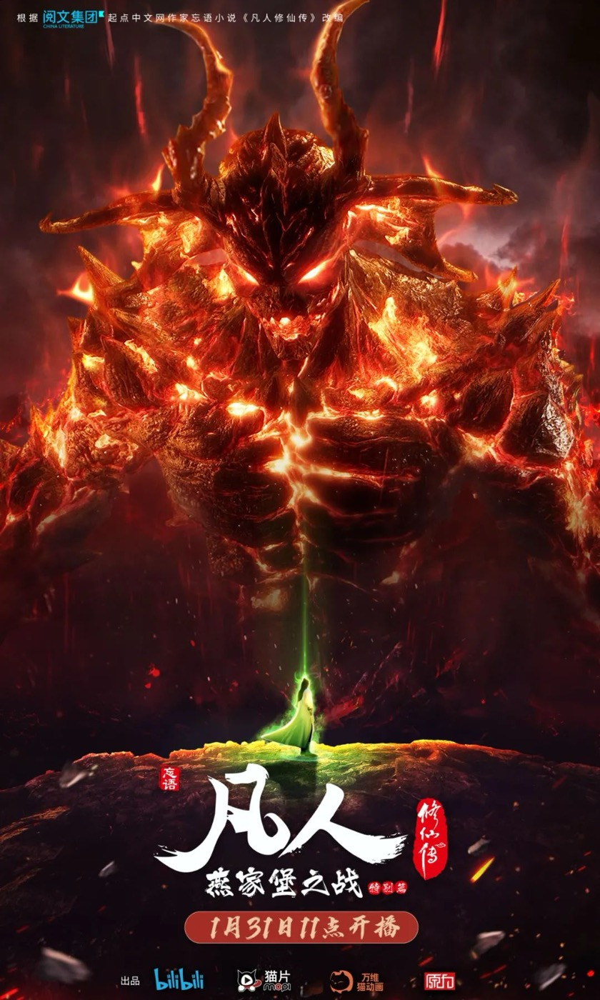
与天南隔着无边海的万里星海：内星海由星宫统治，外星海（妖海）妖修盘踞
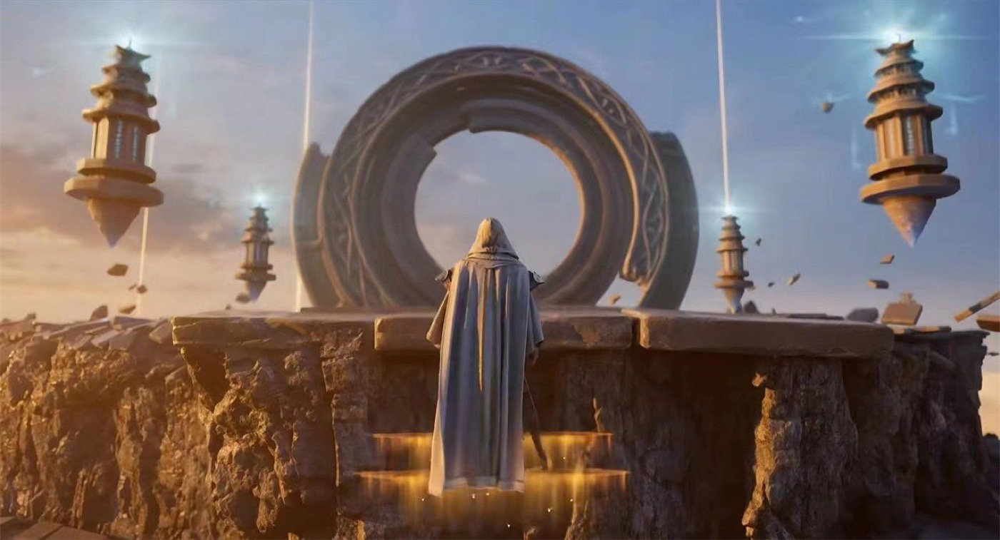
乱星海人族修士的统治者，立派近万年；以虚天殿为权柄，双圣坐镇圣岛。
代表人物天星双圣 · 凌啸风、温青（元后巅峰，元磁神光）
反对星宫统治的临时联盟，围剿、暗杀不断；幕后被魔道巨擘操纵。
幕后黑手六道极圣（乱星海魔道第一人）
「一人一岛」的魔修格局：玄阴岛与极阴岛最盛，与韩立恩怨极深。
代表人物玄骨上人（玄阴岛）· 极阴老祖（极阴岛）
内星海正道大派：万法门为虚天殿正道领军；妙音门有韩立故人一门。
代表人物万天明（万法门）· 文樯、文思月父女（妙音门）
外星海又称妖海，化形大妖实力可超人类元婴修士，人类修士轻易不敢深入。
代表人物风希（九级化形妖兽，助韩立炼风雷翅）
星海散修依附大岛而居，奇渊岛等巨岛自成一方势力。
代表人物蛮胡子 · 温夫人 · 厉飞羽（南鹤岛，韩立七玄门故人）
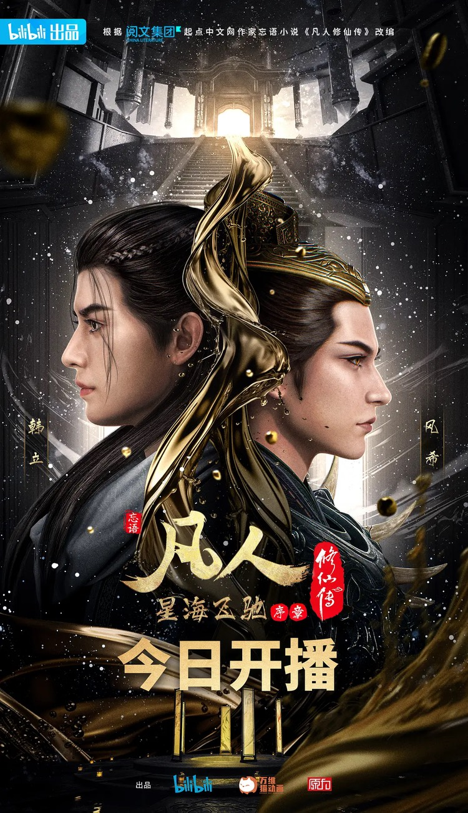
凡人 → 练气 → 筑基 → 结丹 → 元婴；年龄为原著设定，篇章跟随动画
约 10 岁 · 风起天南
山村二愣子入江湖门派，得修仙功法《长春功》；偶得神秘小瓶——掌天瓶，滴液可催熟灵药。
约 20 岁 · 风起天南
识破墨大夫夺舍之谋后南下入越国，拜入黄枫谷；倚掌天瓶「嗑药」苦修，练气层层递进。
25 岁 · 风起天南
七派试炼血色禁地，冒死夺得多枚筑基丹；禁地墨蛟妖雾中与南宫婉初遇结缘。
特别篇 · 魔道争锋
魔道六宗大举破越国，七派联军血战；韩立锋芒渐露，历经燕家堡之战后远走他乡。
126 岁 · 再别天南
以《三转重元功》辅修凝成金丹；慕兰术士首度入侵天南，韩立以天雷子建功，随后别过天南故人。
约 130 岁 · 初入星海
孤身跨无边海入乱星海；结识首位故人文樯，由他带路识得星海势力格局。
虚天殿篇
与七位元婴修士同探虚天殿，名场面「韩立让柱」避祸夺宝，携出乱星海第一秘宝虚天鼎，自此被玄骨追杀。
约 150—210 岁 · 星海飞驰
化名隐匿星海：与紫灵一路同行，寻风希炼成风雷翅，救助落难的文思月；修为渐进大圆满。
217 岁 · 结婴名场面
乱星海外海灵眼之地闭关结婴；动画播出时直播间在线破 40 万，成为年度名场面。
约 220 岁 · 重返天南
应程天坤、吕洛之邀出任落云宗第三位太上长老；与南宫婉重逢结为道侣，重游阗天城交易会。
重返天南篇
天南诸元婴密会组队赴苍坤遗址：一行九人各怀心思，坠入横亘万年的遗宝骗局。
当前 · 慕兰之战（更新中）
慕兰再度大举入侵：破血罗罩救十元婴、两窃元明灯、力抗仲神师四日追杀——动画更新至此。
道侣、红颜、故人与对手——凡人路上另一种修行
道侣 · 掩月宗 → 落云宗
血色禁地中相识的紫纱女修；百年守望几度生死，韩立重返天南后终成道侣，同驻落云宗。
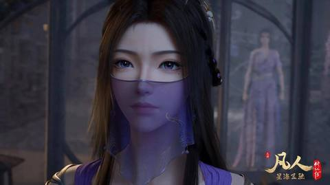
红颜知己 · 紫纱蒙面
虚天殿共历生死的同行者，星海飞驰一路并肩；身份来历始终成谜，情愫若即若离。
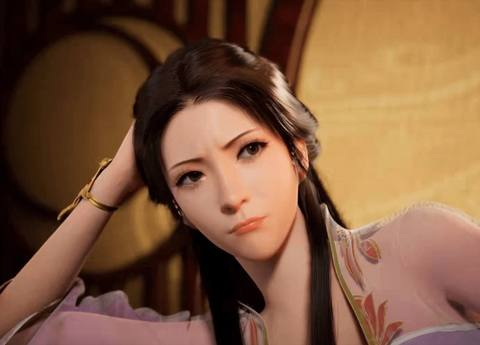
意难平 · 黄枫谷同门
越国时期的青涩情愫；乱世离散、重逢已隔沧海，是韩立心底最柔软的遗憾之一。
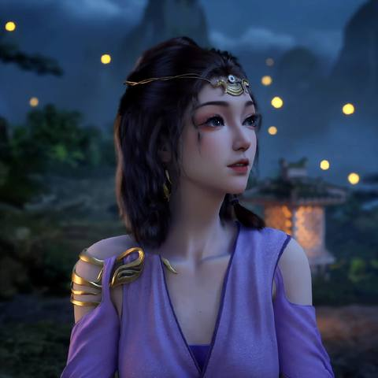
葡萄仙子 · 妙音门
韩立初到星海时第一位故人文樯之女；落难坊市时得韩立出手相助，投桃报李。
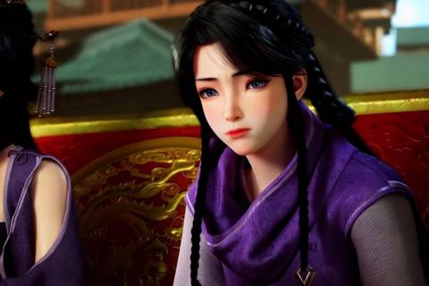
故人之女 · 医女
墨大夫之女，温婉知医；韩立早期最柔软的凡尘牵挂，多年相随不离。
黄枫谷同门 → 合欢宗
天生媚体的俏师姐，由挑逗到胜负欲的孽缘；云露老魔与红拂之女，立场渐行渐远。
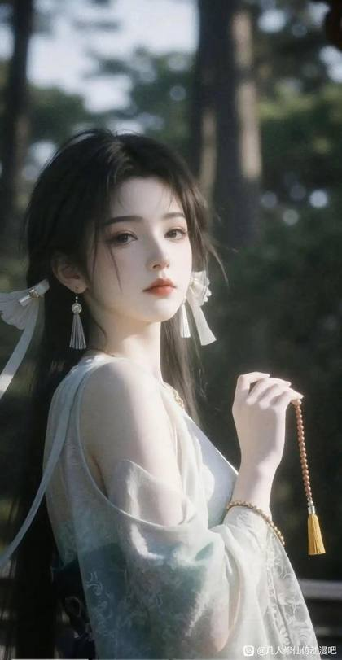
慕兰圣女
慕兰族圣女，182 集初登场；草原与天南的战局因她多了几分宿命纠葛。
掩月宗 → 散修联盟
董萱儿之母，与云露老魔一段旧缘；先随南宫婉入落云宗，后组建散修联盟。
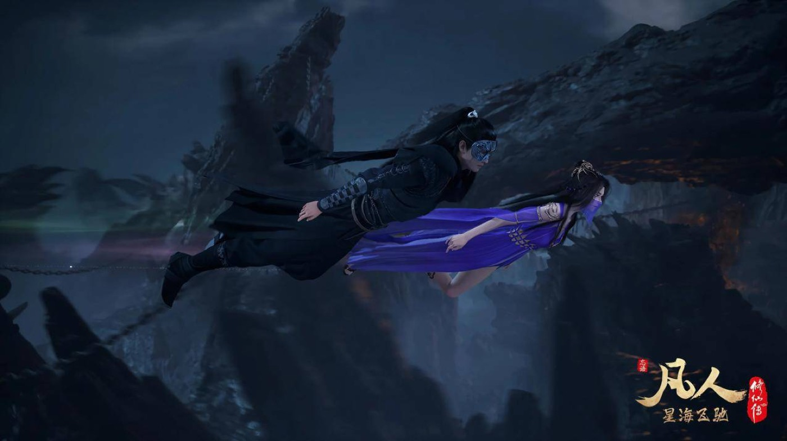
元瑶、银月、紫灵真容等大晋篇与灵界篇的角色尚未在动画登场，留待后续更新。